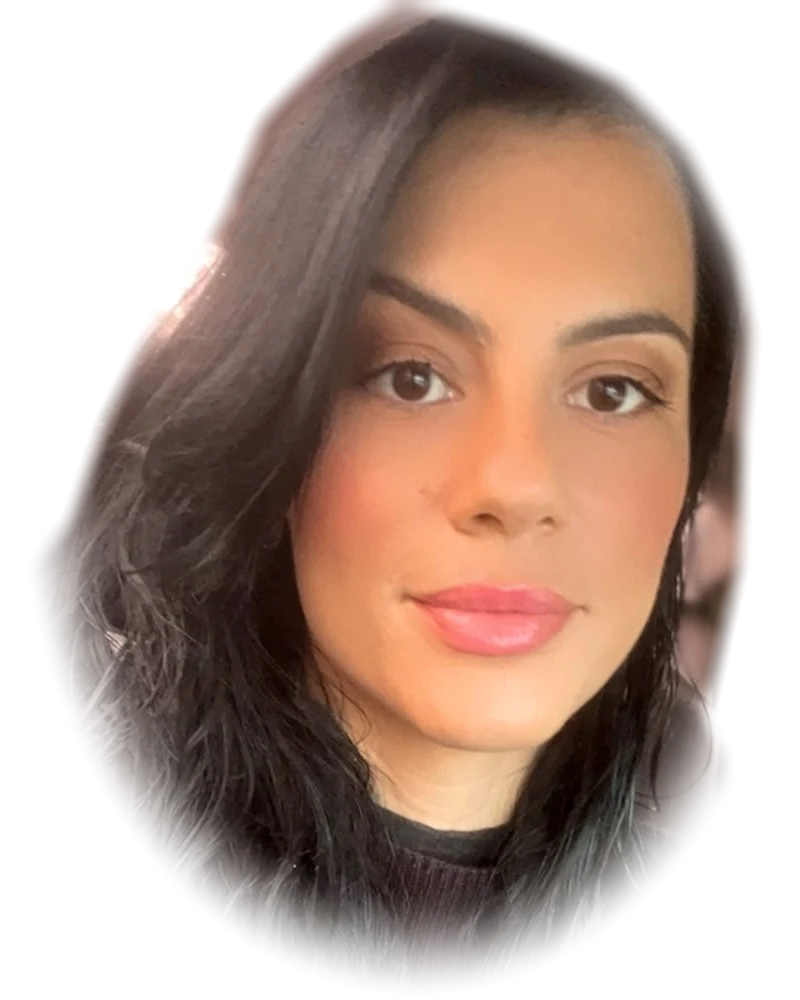

Sua clínica cuida da beleza. Eu cuido da gestão por trás dela.
Regularização, protocolos e equipe organizados, para a sua clínica atender com segurança e crescer com tranquilidade.
Para começar: o que a sua clínica mais faz?

Clínica regularizada Equipe seguraNa estética, um erro pode ser fatal.
Para a cliente, quando uma falha vira dano de verdade. E para a clínica, quando uma interdição ou um processo encerram anos de trabalho. Toque nos cartões.
O que está em jogo para a cliente
- Queimadura por equipamento mal ajustado
- Infecção por falha de higiene ou esterilização
- Reação a produto sem procedência ou vencido
- Intercorrência sem resposta preparada
O que está em jogo para a clínica
- Autuação e multa da Vigilância Sanitária
- Interdição parcial ou total
- Processos e pedidos de indenização
- Uma reputação que levou anos para ser construída
1 em 10 pacientes sofre algum dano durante a atenção à saúde no mundo, e cerca de metade poderia ser evitada. Fonte: OPAS/OMS, Dia Mundial da Segurança do Paciente.
Sua clínica está habilitada?
Marque ao lado o que já está em dia na sua clínica.
Enviar para a JulianaÉ uma triagem inicial, não substitui a avaliação técnica nem a inspeção dos órgãos competentes. As exigências mudam conforme o município e os procedimentos realizados.
Consultoria completa ou um serviço de cada vez.
Do diagnóstico à rotina funcionando.

Juliana Costa
Acredito que boa gestão também é uma forma de cuidado. Quando os processos são claros, a equipe trabalha com mais segurança, a cliente é melhor atendida e a clínica cresce sem sustos.
Sua autoridade não precisa ser gritada. Precisa ser construída.
Melhor descobrir agora do que em uma fiscalização.
Uma conversa inicial já mostra onde estão os riscos e por onde começar.
Falar com a Juliana